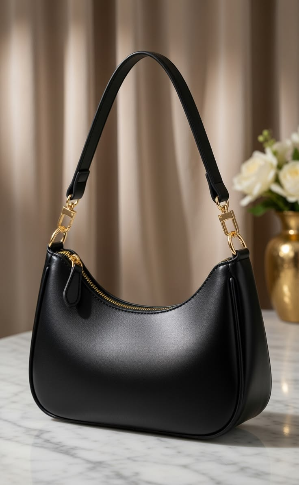
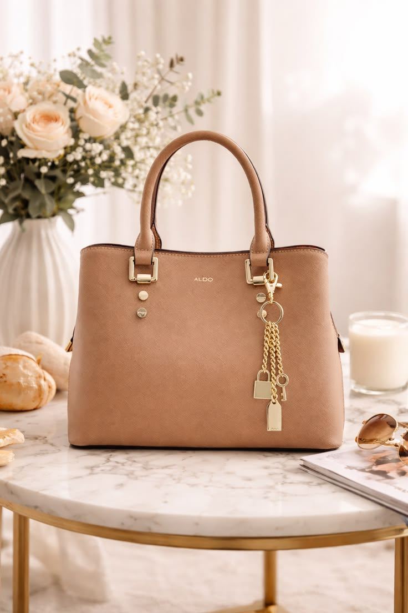
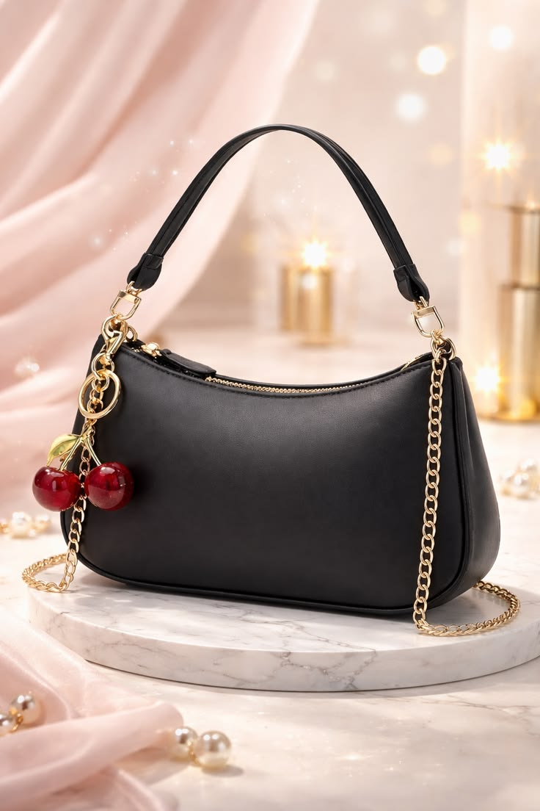
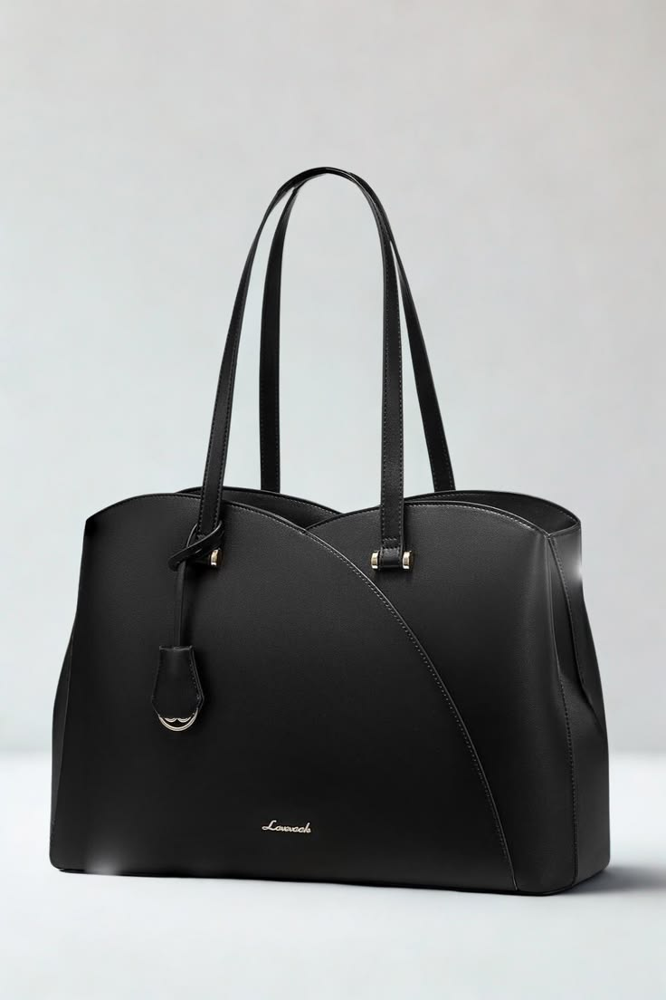
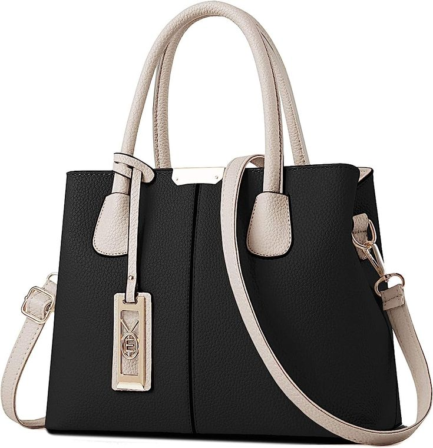

This bag gives instant “effortless chic” energy. The soft hobo shape, retro design, and underarm fit make it one of those pieces that quietly upgrades your entire outfit.
It’s cute, versatile, and the kind of bag you’ll keep reaching for because it just works with everything.
It adds a soft, stylish finish to any outfit instantly.
It makes simple outfits look expensive and intentional.
Check it on Amazon
This is the definition of a polished everyday bag. Clean, structured, and elegant — it instantly makes you look more put-together even on your busiest days.
It turns everyday outfits into a more elevated look instantly.
It looks expensive and works for work, travel, and daily use.
Check it on Amazon
A cute but bold statement piece that adds personality to any outfit. The cherry detail and retro vibe make it stand out in the best way.
It instantly makes your outfit look more stylish and unique.
It’s playful, trendy, and gets compliments everywhere.
Check it on Amazon
This is the bag that makes work life feel more organized and stylish. It fits everything you need while still looking sleek and professional.
It replaces clutter with structure and elegance in your daily routine.
It makes work outfits look more powerful and put-together.
Check it on Amazon
Simple, elegant, and timeless. This is the type of bag that works with everything — from casual outfits to dressy looks.
It’s a reliable everyday bag that always looks good.
It’s simple, elegant, and goes with every outfit.
Check it on Amazon